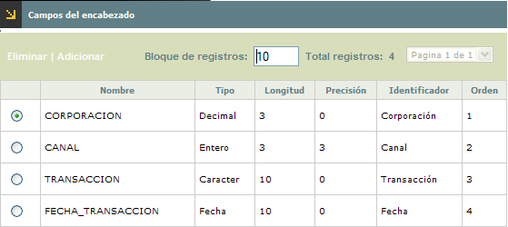
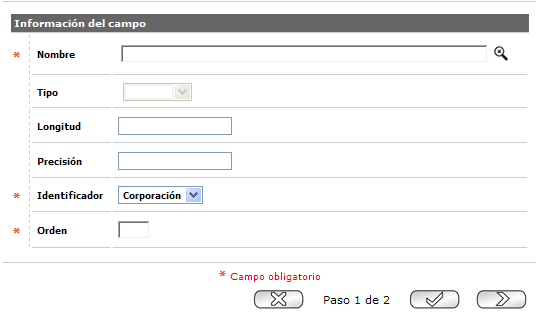
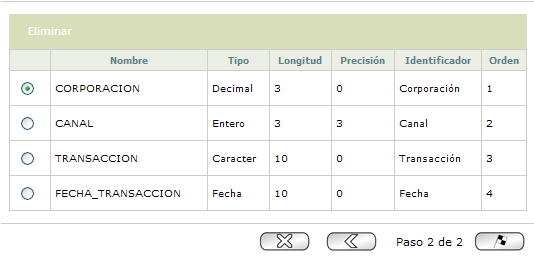

Campos del encabezado
Mediante esta opción se habilita la consulta y mantenimiento de la tabla en la cual se almacenan los campos del encabezado de la transacción y el orden en que son enviados. Cada campo contiene un nombre Técnico, un tipo, longitud, precisión (si es decimal), identificador y orden.
El formulario contiene los enlaces: Adicionar y Eliminar:

Adicionar:Al activar ese enlace, se despliega un Asistente de dos pasos. En la primera página se registran y adicionan cada uno de los campos del encabezado.

|
Nombre: |
Campo obligatorio con lista de valores del cual se selecciona el campo de va a ser registrado como campo del encabezado de la transacción. |
| Tipo: |
Este campo no modificable muestra el tipo del campo (carácter, decimal, entero o fecha) y se llena automáticamente cuando se selecciona un registro de la lista de valores de campos. |
| Longitud: | Este campo no modificable muestra la longitud del campo y se llena automáticamente cuando se selecciona un registro de la lista de valores de campos. |
| Precisión: | Este campo no modificable muestra la precisión del campo (si es de tipo decimal) y se llena automáticamente cuando se selecciona un registro de la lista de valores de campos. |
| Identificador: |
Campo obligatorio que contiene los valores Corporación, canal, transacción, fecha y otro. |
| Orden: | Campo numérico de 2 posiciones que representa el orden en que será enviado el Campo del Encabezado. |
Una vez adicionados los registros, al desplazarse a la segunda página del Asistente, se muestra el resumen de los diferentes campos adicionados y se confirma la acción mediante el botón Finalizar.
